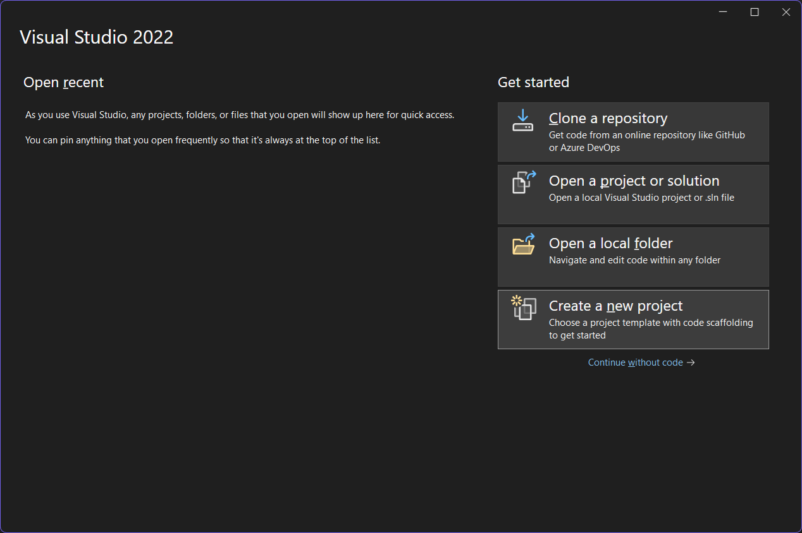
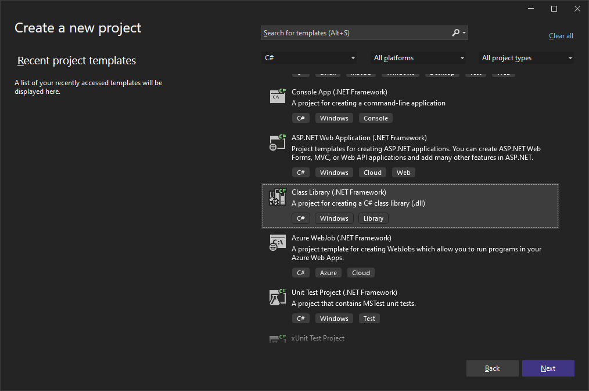
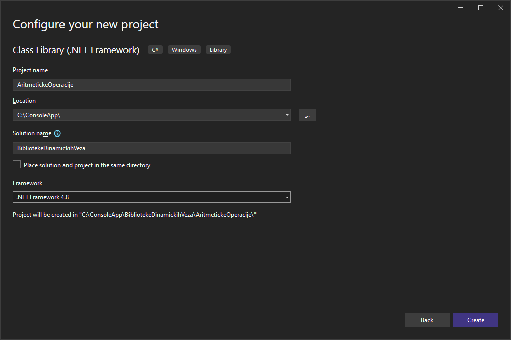
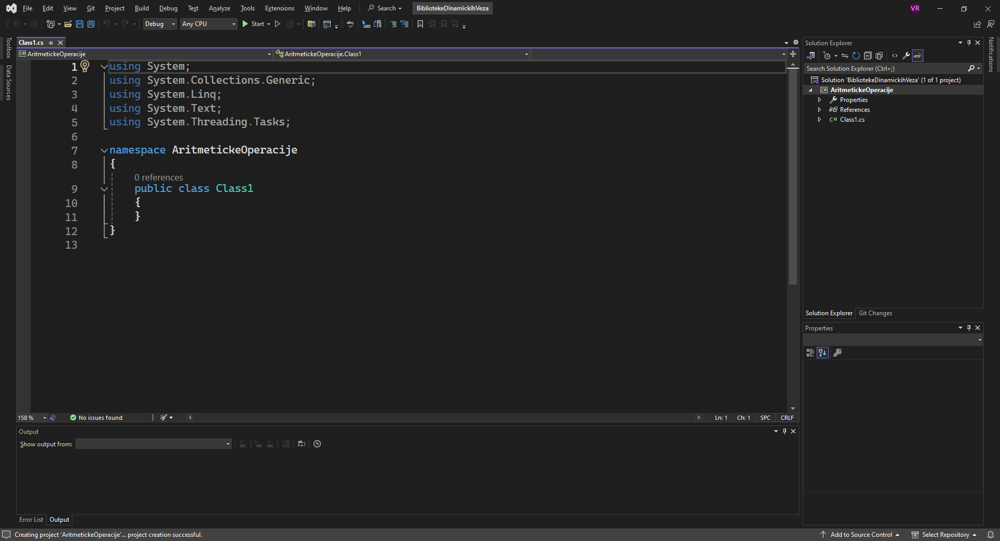
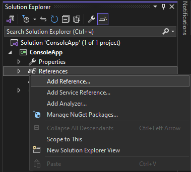
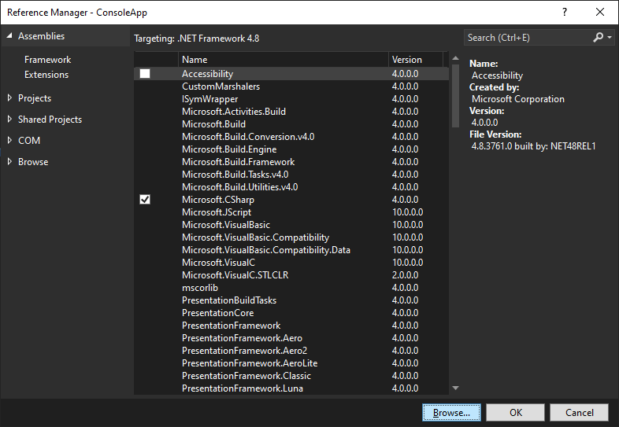
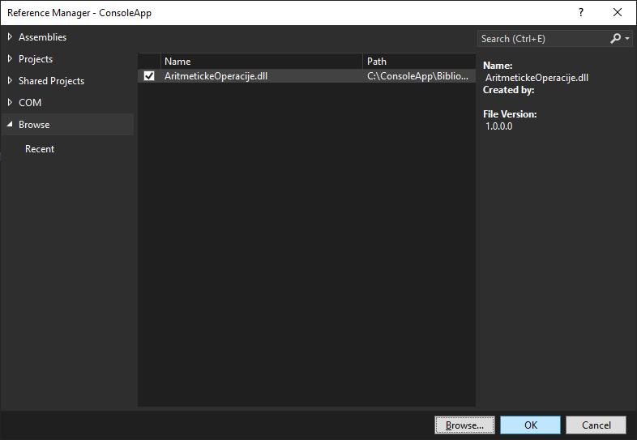
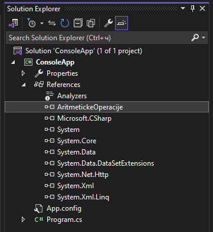

Динамичке библиотеке класа¶
Библиотека динамичких веза (енгл. Dynamic Link Library, DLL) представља фајл
у оперативним системима Windows који садржи програмски кôд, податке и ресурсе
који могу бити коришћени од стране више програма истовремено. Подразумевана
екстензија за фајлове библиотека динамичких веза је .dll, а њихов формат
идентичан је формату извршних (.exe) фајлова. Главна разлика између .dll и
.exe фајлова је да се .dll фајлови не могу покренути директно као .exe
фајлови.
Предности коришћења библиотека динамичких веза су очигледне:
поновна употреба кода - исти програмски кôд користи више апликација,
величина фајлова - мањи извршни фајлови јер се заједнички кôд за више програма налази у библиотеци динамичких веза,
ажурирање кода - ажурира се једна библиотека динамичких веза, уместо ажурирања више програма који је користе и
модуларност - програми су подељени на мање, лакше управљиве делове.
У пракси, коришћење библиотека динамичких веза има и своје недостатке.
Различити програми могу захтевати различите верзије исте библиотеке динамичких
веза, а различите верзије оперативног система Windows могу да очекују
различите формате .dll фајлова.
Креирање библиотеке динамичких веза¶
Креирање библиотеке динамичких веза у развојном окружењу Visual Studio је прилично једноставно и интуитивно. Нека је задатак да се креира библиотека динамичких веза са методама за рад са целобројним променљивама и основним рачунским операцијама, на пример: сабери, одузми, помножи, подели и израчунај остатак приликом целобројног дељења.
Покрени развојно окружење и одабери Create a new project.

Одабери Class Library (.NET Framework) и кликни Next.

Унеси име пројекта, одабери локацију, унеси име решења, одабери .NET Framework
верзију и кликни Create.

Развојно окружење креираће именски простор назван онако како си назвао свој
пројекат у оквиру којег се налази фајл Class1.cs.

У Solution Explorer-у развојног окружења можеш променити име фајла
Class1.cs у неко име које одговара њеној сврси, на пример Racunaj.cs. У
креираној класи напиши методе тражене у задатку, на пример овако:
namespace AritmetickeOperacije
{
public class Racunaj
{
public int Saberi(int x, int y)
{
return x + y;
}
public int Oduzmi(int x, int y)
{
return x - y;
}
public int Pomnozi(int x, int y)
{
return x * y;
}
public int Podeli(int x, int y)
{
return x / y;
}
public int Ostatak(int x, int y)
{
return x % y;
}
}
}
У менију Build развојног окружења одабери Build Solution или на тастатури
притисни CTRL+SHIFT+B. Овим си креирао библиотеку динамичких веза, у
примеру изнад, библиотеку AritmetickeOperacije.dll која се налази у
bin\Debug директоријуму твог пројекта.
Коришћење библиотеке динамичких веза¶
Креирану библиотеку динамичких веза сада можеш користити у било којој .NET
Framework апликацији коју развијаш. Нека то буде класична конзолна апликација.
Када креираш нову конзолну апликацију, у Solution Explorer-у развојног
окружења, десним кликом на References одабери Add Reference.

Затим кликни Browse…

…па одабери креирану библиотеку динамичких веза и кликни OK.

У Solution Explorer-у појавиће се референца на одабрану библиотеку.

Пре него што почнеш да користиш методе из додате библиотеке динамичких веза, потребно је да у заглављу додаш одговарајући именски простор:
using AritmetickeOperacije;
Пример конзолне апликације у којој се користе методе из додате библиотеке динамичких веза може да изгледа овако:
using System;
using AritmetickeOperacije;
class Program
{
static void Main()
{
Console.Write("Unesi a: ");
int a = int.Parse(Console.ReadLine());
Console.Write("Unesi b: ");
int b = int.Parse(Console.ReadLine());
Racunaj racun = new Racunaj();
Console.WriteLine("a + b = " + racun.Saberi(a, b));
Console.WriteLine("a - b = " + racun.Oduzmi(a, b));
Console.WriteLine("a * b = " + racun.Pomnozi(a, b));
Console.WriteLine("a / b = " + racun.Podeli(a, b));
Console.WriteLine("a % b = " + racun.Ostatak(a, b));
}
}
У примеру изнад, након уноса вредности променљивих a и b, креиран је
објекат racun класе Racunaj која је дефинисана у библиотеци динамичких веза
у именском простору AritmetickeOperacije. Компајлер зна где се та библиотека
динамичких веза налази, јер је претходно на њу додата референца у
Solution Explorer-у. Након креирања објекта, користе се методе дефинисане у
класи рачунај за израчунавање збира, разлике, производа, количника и остатка
приликом целобројног дељења.
Библиотеке динамичких веза можеш на исти начин прикључити и другим типовима пројеката у развојном окружењу Visual Studio.